Bali, Indonesia - Liberty Dive Resort - October - November 2014
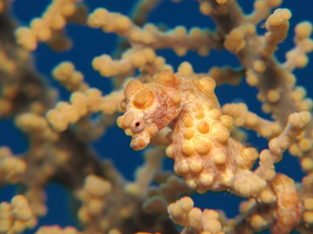
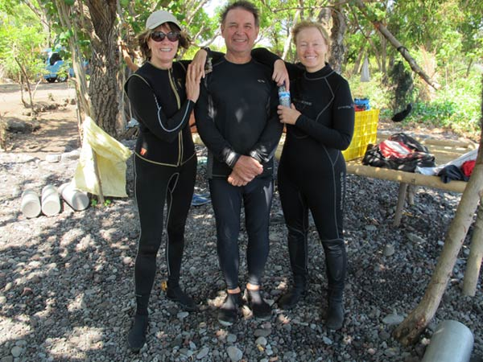
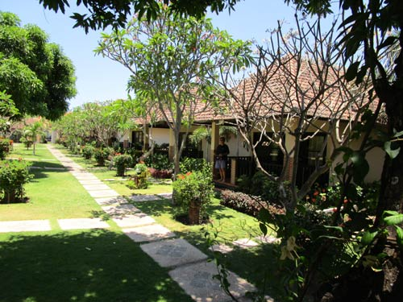
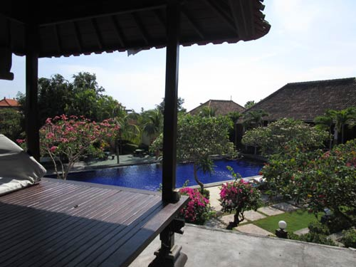
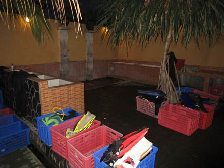
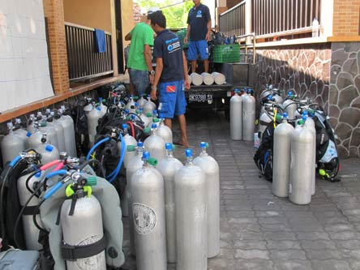
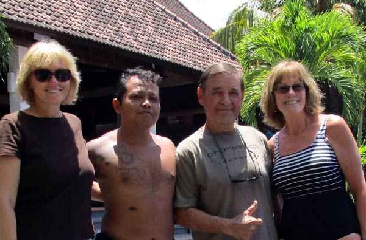
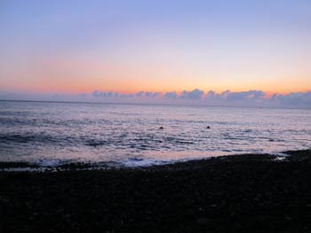
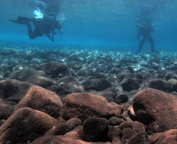
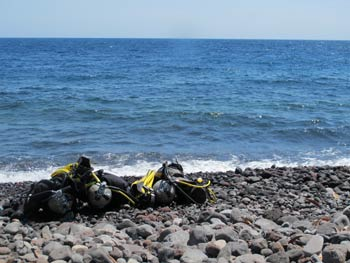
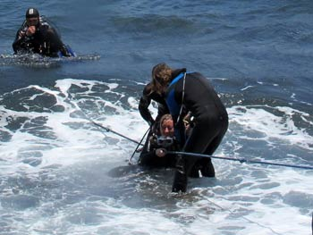
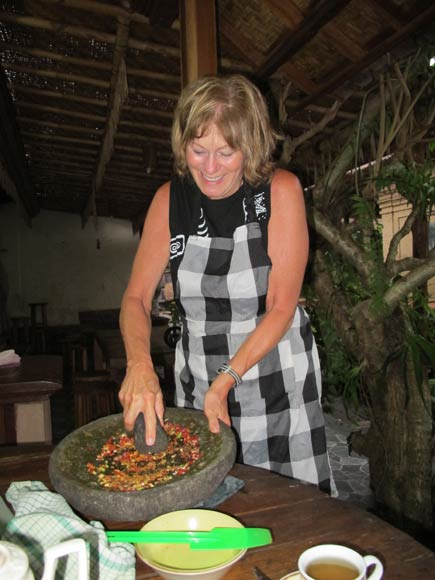
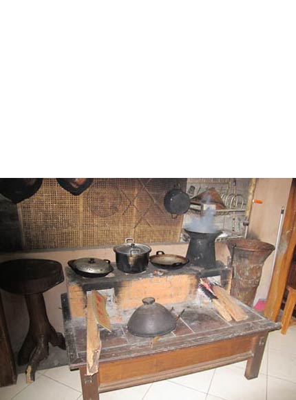
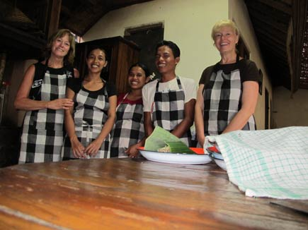
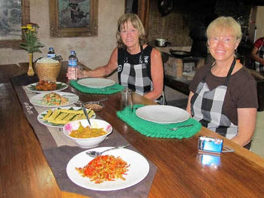
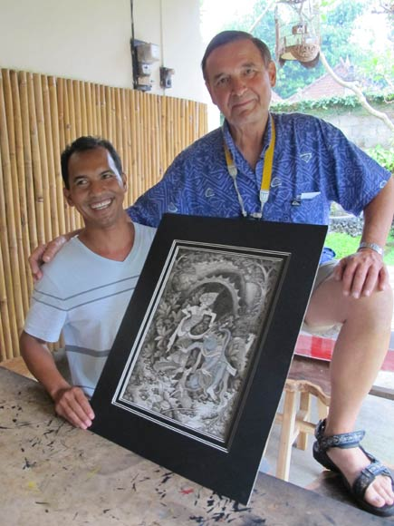
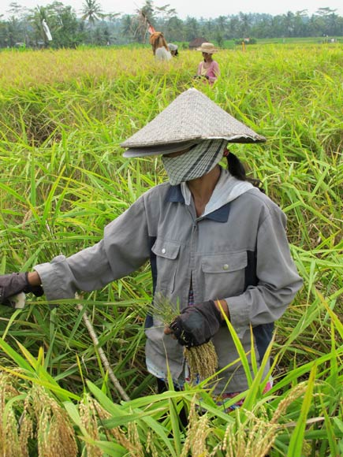
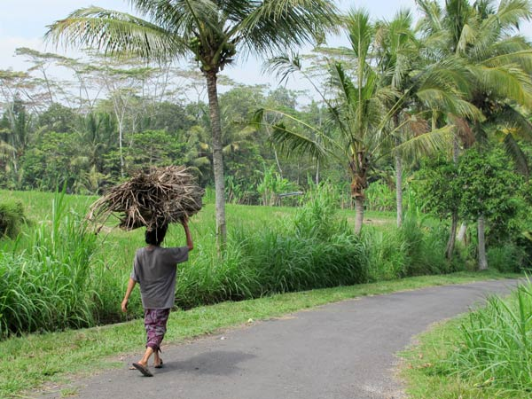
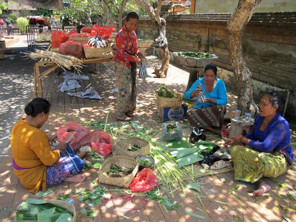
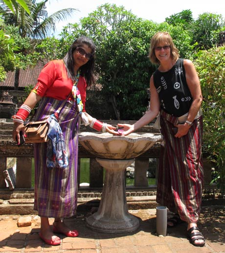
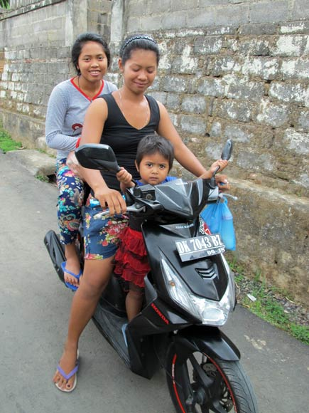
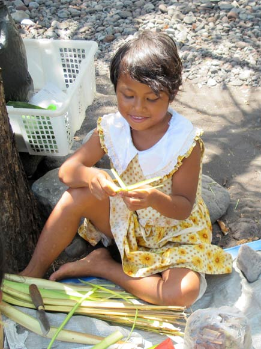
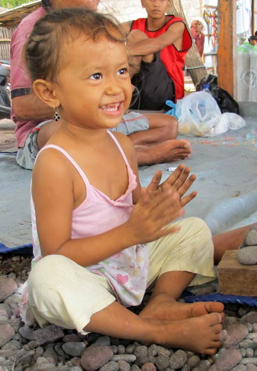
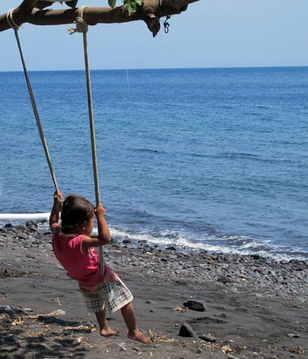
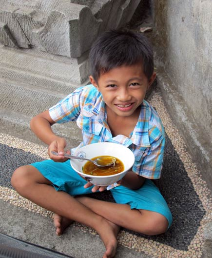
Next time................
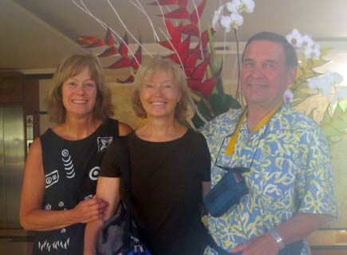
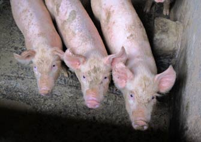
November 2014
Trip Report Quick Links --Please Choose Your Destination-- Ambon, Indonesia - Maluka Dive Resort - Nov '09 Aniloa, Philippines - Crystal Blue - Apr '13 Bali, Indonesia - Liberty Dive Resort - Apr '11 Bali, Indonesia - Liberty Dive Resort - Nov '14 Bonaire, Netherland Antilles- Captain Don's Habitat - Nov '19 Bonaire, Netherland Antilles - Bonaire Town Homes - May '16 Bunaken, Indonesia - Two Fish Resort - Nov '15 Indonesia - Liberty Dive Resort and NAD Resort - Nov '16 Lembeh, Indonesia - NAD Lembeh Resort - Mar '12 Raja Ampat, Indonesia - Archipelago II Live-Aboard - Dec '09 Roatan Bay Islands, Honduras -Destination Report - Feb '10 Roatan, Honduras - CoCo View Resort: A Photo Report - Aug '11 Roatan, Honduras - CoCo View Resort: Photo Review - Feb '12 Roaton Honduras - The Coral Spawn - Aug '10 Riverfront Arts Center - Treasures of the Deep - Apr '10 Trip and Destination Reports
Voice of the Sea by Vivian